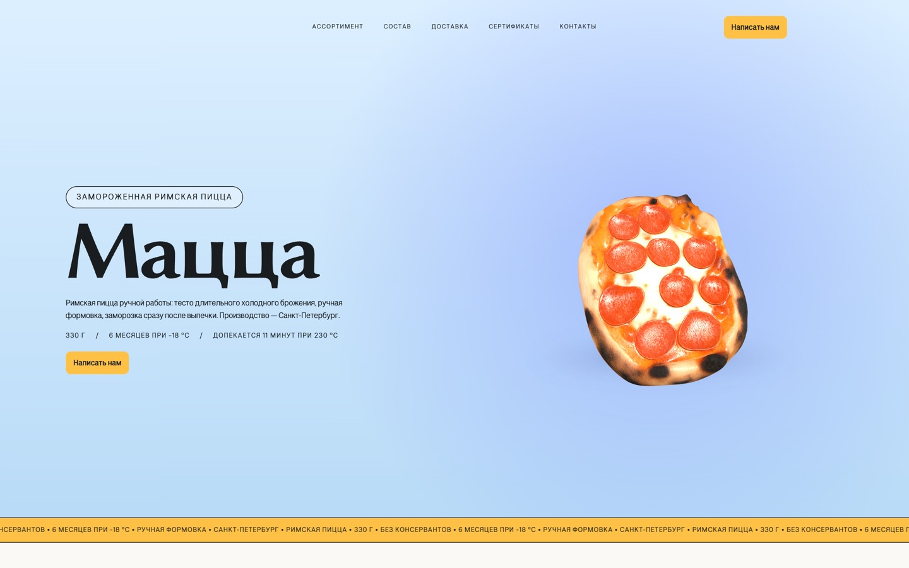
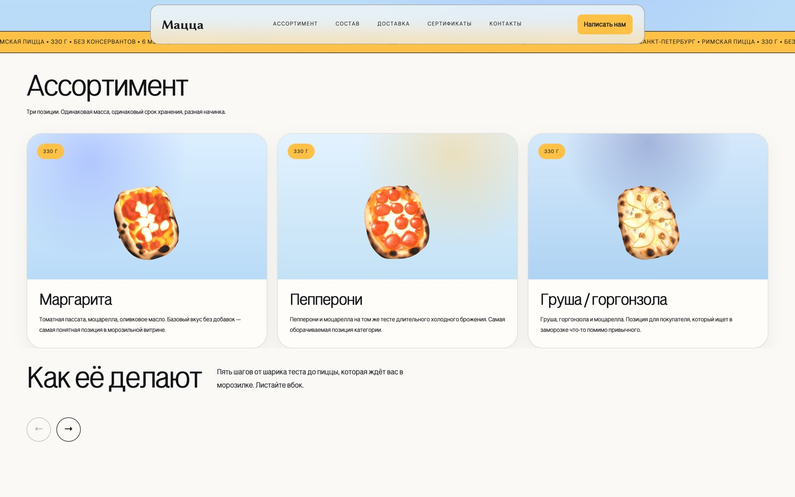
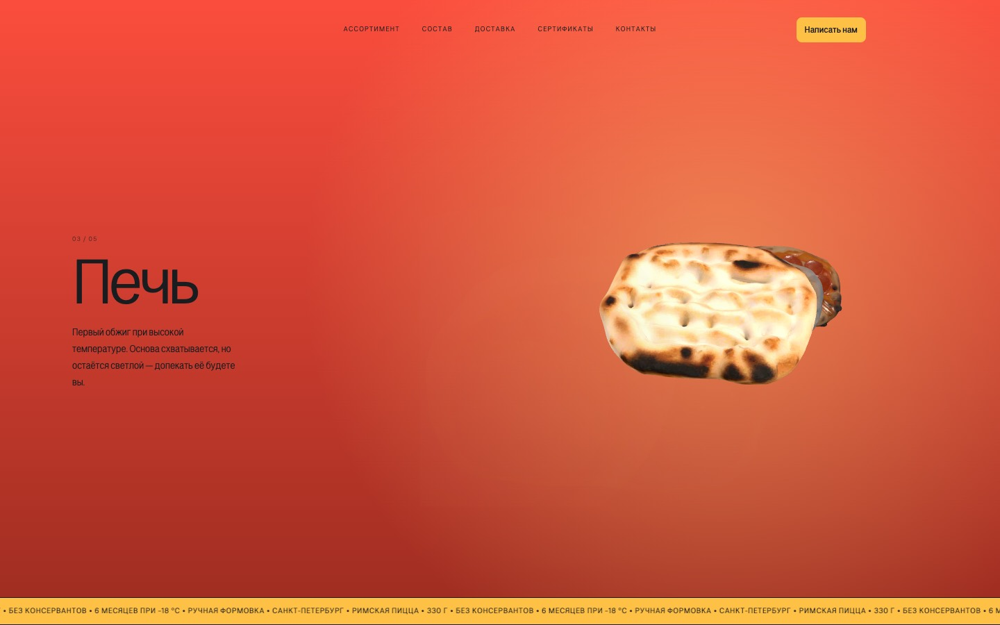
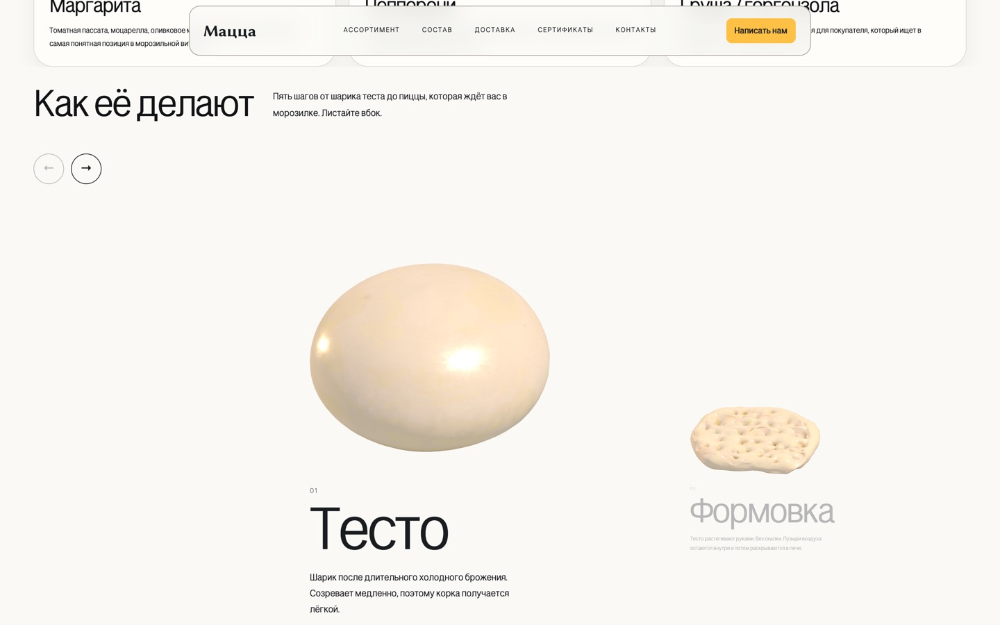
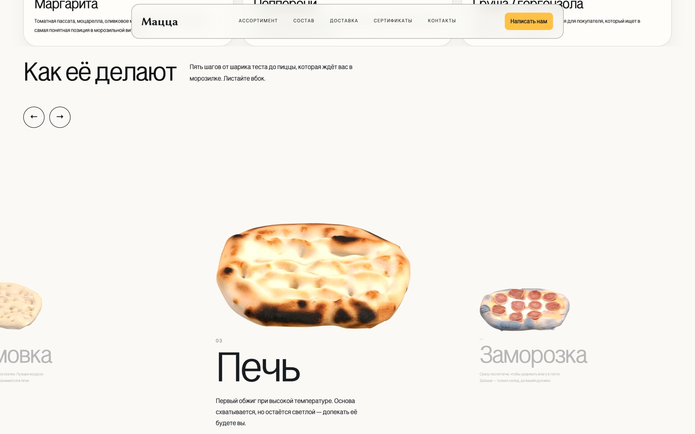
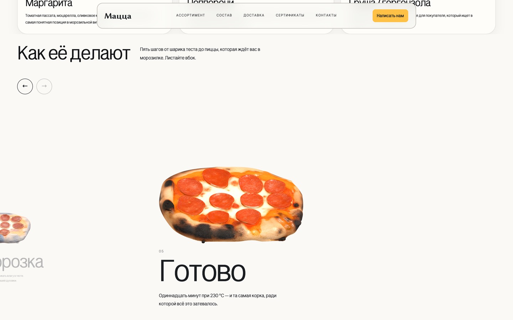
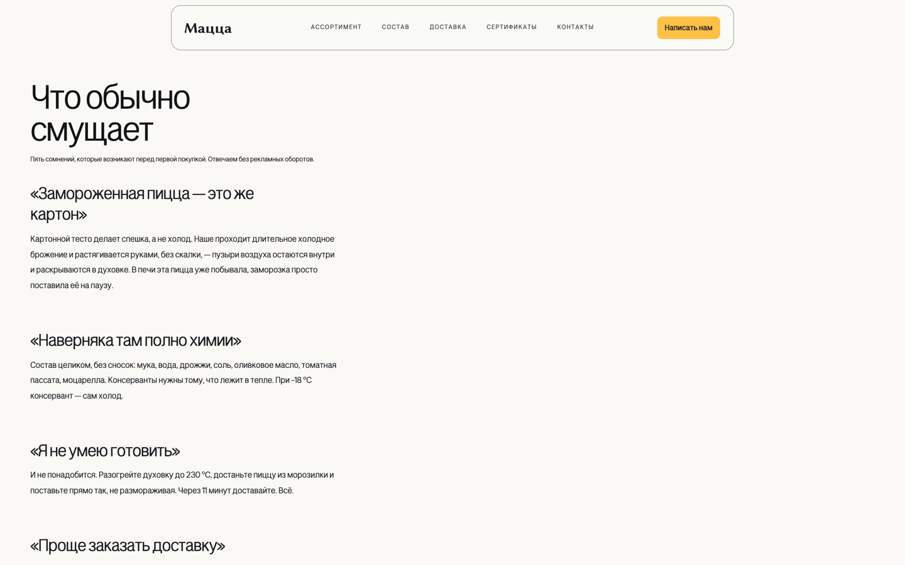

«Мацца», замороженная римская пицца
Это рассказ о том, как я выбирал, кому продавать пиццу, которую ещё не начал производить. По порядку: откуда взялось производство, почему отпали рестораны, что показала финансовая модель и какую работу в этом выполняет сайт. Продаж пока нет, поэтому в конце — список того, что проверено, и того, что нет.
Началось с ночного окна на чужом производстве
Мне посчастливилось познакомиться с владельцем производства десертов. Он предложил готовить пиццу у него по ночам: в это время оборудование простаивает. Я согласился.
Вместе с шеф-пиццайоло Ильёй Галайдо мы разработали рецептуру и проверили её на площадке. Римская пицца 330 г, тесто длительного холодного брожения, гидратация 75% двумя вливами.
Дальше встал вопрос, кому это продавать.
Рестораны отпали из-за хранения
Хорека выглядела очевидным первым ответом: партнёр работает именно так, его логистика уже настроена на весь Петербург, и казалось, что достаточно поставить свою пиццу в готовую цепочку.
Разбор эту идею отменил по трём причинам. Цена растёт от числа точек: чем больше адресов в рейсе, тем дороже каждая пицца. Клиентов трудно искать, и берут они мало. И главное — заморозку негде хранить: с местом в морозильниках плохо почти у всех.
Свой бренд как проба, дальше СТМ
Я не верю, что в одиночку разовью сильный конкурентоспособный бренд. Под собственной торговой маркой сети работа устроена понятнее: сеть отвечает за полку и спрос, производитель — за качество и объём.
Свой бренд нужен как проба. На нём проверяются рецептура, упаковка, цена и спрос — до того, как идти к сети с предложением.
Узкое место — заморозка, а не печь
Я собрал финансовую модель, где объём выводится из спроса, а мощность его проверяет. Полка ВкусВилла держит около 410 ₽ за 330 г, и в эту цену можно уместиться.
Печь даёт 72 пиццы в час и не ограничивает. Шоковая заморозка — 25 за цикл, и это она задаёт смену: 6 часов работы плюс 2 на подготовку, 100 пицц.
Безубыточность я считаю в двух режимах отдельно. Работа соло и смена с тремя работниками — разные бизнесы, и общая цифра на двоих врала бы обоим.
Непроверенное в таблице я крашу жёлтым и подписываю словами. Ключевое допущение — 15 продаж с точки в неделю — помечено так же, а в двух последних месяцах плана стоит «не влезает»: смены перестают помещаться в календарь.
Комплект документов готов
ХАССП, ТУ, технологическая инструкция, программа производственного контроля и журналы собраны. Сейчас я проверяю инструкцию на полной партии: 100 пицц за смену из 12,5 кг муки.
Сайт отвечает двум читателям
Сайт я делал параллельно всему остальному, в свободное время между сменами в ресторане. Поэтому он менялся вслед за решениями по продукту.
Закупщик открывает его до встречи или после и решает, серьёзные ли перед ним люди. Покупатель находит пачку на полке, ищет название и выясняет, что внутри и как это готовить.
Заказ идёт через личный разговор, поэтому сайт не продаёт. Он показывает подробный состав, режим хранения и приготовления, 5 возражений покупателя его же словами — и прочерки в реквизитах вместо выдуманного ИНН, пока ИП не зарегистрировано.


3D закрывает отсутствие фотосъёмки
Съёмки продукта ещё не было, а на полке пачка встанет среди коробок с фотографией пиццы на крышке. 3D-модели решают обе задачи сразу.
5 моделей стадий приготовления я сжал с 21 МБ до 1,8: иначе сайт не открыть с телефона. Модели отсканированы только с лицевой стороны, поэтому они покачиваются в пределах угла, за которым видно изнанку.
Ассортимент встал перед презентацией
Презентация приготовления сначала стояла первым экраном: 5 полноэкранных шагов, и до первой позиции ассортимента покупатель пролистывал 6 экранов.
Сейчас ассортимент идёт сразу за первым экраном. Презентация переехала в отдельную полосу со своей горизонтальной прокруткой: смотреть её или проехать мимо решает читатель.





Что проверено и что нет
Проверено: рецептура на производстве партнёра, комплект документов, себестоимость по закупочным ценам. Технологическая инструкция проверяется на полной партии прямо сейчас.
Не проверено ничего из того, что касается спроса. 15 продаж с точки в неделю, 46 точек к концу года, цена сети, цикл шоковой заморозки — всё это допущения. Сайт не видел ни один закупщик.
Продукта в продаже нет, ИП не зарегистрировано, название рабочее: «Мацца» просто созвучно «пицце» и запоминается.
Дальше: регистрация ИП, лабораторные испытания и декларация, первая полная смена с замером цикла заморозки, разговор с первой сетью.
Титры
- Рецептура — Илья Галайдо, шеф-пиццайоло, и я.
- Производство — площадка партнёра, ночное окно, процент с выручки.
- Технологическая документация, финансовая модель, сайт — я.
- Код и вёрстка сайта — в паре с Claude Code.
- Начало — март 2026. Пуска нет: продукт не готов. Работа идёт в свободное время.
- Сайт — lechatsergeev.github.io/rimsk